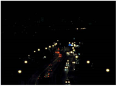
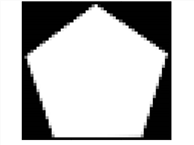
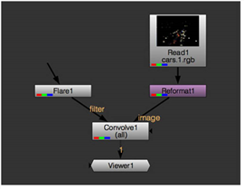

“卷积” 节点允许您通过提供自己的滤镜图像来创建自定义滤镜效果。此图像用作卷积矩阵。换句话说，像素的新值是通过将过滤器图像集中在像素上，检查其邻居，将每个像素值乘以过滤器图像中相应的像素值来计算的, 然后将结果相加。这允许您取消剪辑的焦点，并在滤镜图像的形状中创建镜头模糊效果 (散景) (另请参见 仿真景深模糊 )。
|
 |
 |
| 的 图像 输入。 | 的 过滤器 输入。 |
|
|
| 结果。 |
要使用卷积节点:
| 1。 | 单击 过滤器 > 旋转 要在要接收卷积滤镜效果的图像后插入卷积节点 ( 图像 输入)。 |
| 2. | 将查看器附加到卷积节点的输出。 |
查看器中出现错误，因为我们没有连接 过滤器 输入。
| 3. | 将过滤器图像连接到 过滤器 输入。此图像代表用于拍摄的相机光圈的形状和大小 图像 输入。它可以是你喜欢的任何形状，例如五角大楼或六边形。 |
如果您没有过滤器图像，您可以使用 Roto 节点 ( 绘制 > Roto ) 或 Flare 节点 ( 绘制 > 耀斑 )。
|
 |
| 一个简单的卷积设置。 |
请注意，您不一定需要将滤镜图像裁剪到更小的尺寸，因为快速傅里叶变换用于加快大型滤镜图像的卷积。
| 4. | 在卷积节点控件中，设置 渠道 到的渠道 源 你想影响的图像。默认情况下，卷积效果应用于所有通道。 |
| 5. | 从中选择要使用的频道 过滤器 输入，执行以下操作之一: |
• 设置 过滤通道 下拉菜单到您要使用的频道。默认情况下，此菜单设置为 Rgba.alpha .
• 从中使用相同的通道 过滤器 输入作为 图像 输入 (即，无论 渠道 设置为)，检查 使用输入通道 .
| 6. | 在大多数情况下，你可以离开 正常化 检查过了这意味着 过滤器 在使用输入之前，输入被其中所有像素的总和除以，并确保卷积不会改变图像的整体亮度。 |
| 7. | 使用 过滤边界 在卷积控件的下拉菜单中选择是否要将过滤器图像限制为: |
• 形状 -The 过滤器 输入的边界框。在这种情况下，卷积只使用边界框区域，并且过滤器的中心是边界框的中心。这是默认值。你可能想使用它，例如，如果你的 过滤器 输入是一个带有小边界框的旋转形状，该边界框不会填充整个格式区域。
• 格式 -The 过滤器 输入的格式。在这种情况下，Convolve 使用整个格式区域，允许您在格式中偏移过滤器图像。
| 8。 | 如果你想掩盖卷积效果，请检查 面具 并使用右侧的控件选择遮罩通道。例如，可以选择深度通道作为遮罩来模拟景深模糊。 |
|
|
|
|
一个简单的斜坡节点用作
面具。 |
结果。 |
请注意，还可以使用 ZDefocus 节点进行更精确的景深模糊。有关更多信息，请参见 仿真景深模糊 .
| 9. | 在原始之间溶解 图像 输入和完全卷积效果，调整 混合 滑块。 |
提示:
You can check
使用 GPU (如果可用)
to have the node run on the graphics processing unit (GPU) rather than the central processing unit (CPU). The output between the GPU and CPU is identical on NVIDIA GPUs, but using the GPU can significantly improve processing performance.
Nuke
supports AMD GPUs on late 2013 Mac Pro 6,1 and mid 2015 Mac Pro 11,5, running OS X 10.9.3 'Mavericks', or later. While, in some cases the bit-wise equality between GPU and CPU holds, for some operations there are limitations to the accuracy possible with this configuration.
For more information on the minimum requirements, please see
GPU 加速要求
or refer to the
Nuke
Release Notes available in
帮助
>
发行说明
.
You can select the GPU to use in the Preferences. Press
转变
+
S
to open the
偏好
dialog, make sure you’re viewing the
偏好
>
性能
>
硬件
tab, and set
默认闪烁设备
to the device you want to use. You must restart
Nuke
for the change to take effect.
If you are using a render license of Nuke, you need to add
-- Gpu
on the command line.
|
|